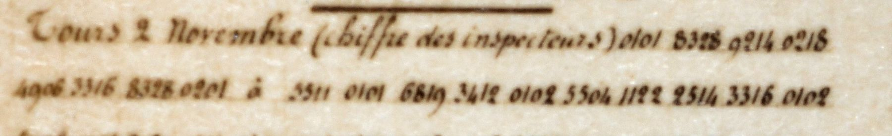
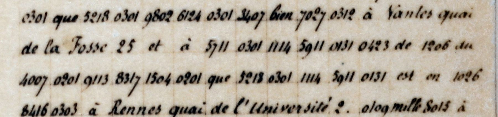
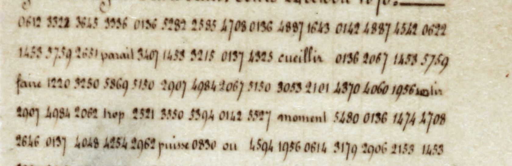
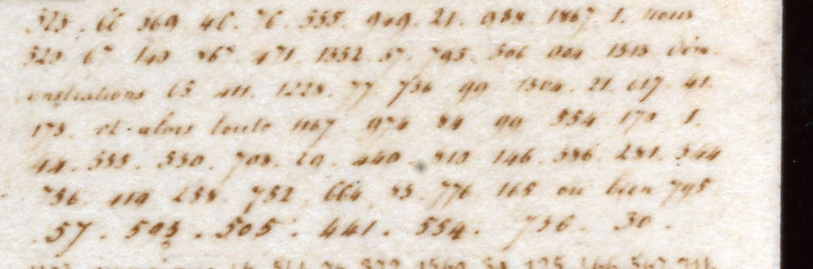
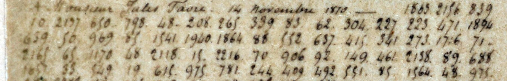
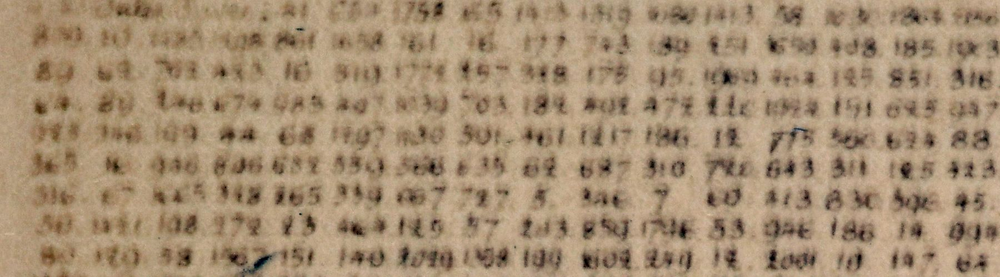

At a glanceKey from adjacent plaintext · partial (64% of the cipher)
- The document
- A pigeon dispatch from Steenackers (director general of telegraphs and posts, Tours), 2 November 1870, headed “chiffre des inspecteurs” and printed as addressed to Mercadier in Paris. The coded heading names three addressees. It holds 754 four-digit groups (349 distinct) mixed with clear words.
- Where
- Alexandre Pillon’s private collection of siege telegrams and pigeongrammes, item “Dépêches officielles, 2me série n 1”. Crops of the scan, his transcription and the derived data files are published here with his permission (section 01); his repertoires R1, R2 and R3 and his Excel files are not.
- The cipher
- The code behaves as a book in alphabetical order: each group is a page (01–99) and a line (01–30), about 2,970 entries of words, syllables and single letters. Pages 01–03 and 05 hold marker groups: brackets around spelled names, paragraph end, grammatical endings.
- How it was deciphered
- From the clear words in the telegram and the order of the book: a group must sort between its known neighbours, and the sentence picks the word. 236 values stand in book order with no inversion. No key and no second text in this code was available.
- What it says
- Steenackers tells his Paris colleagues what line to take towards the post office, reports Prussians leaving Saint-Germain daily with pickaxes, gives a recipe for coating cotton balloons, and passes on family news.
- Still open
- 97 groups (13%), mostly names and single words with several candidates; the exact meaning of the marker groups; thirteen assumed digit slips not yet checked on the scan. No second text in this code exists in the collection to test the values.
- Second round
- Twelve more page scans (about 14,000 groups) were transcribed for the collector. Three codes are in them: his R1, his R2 and the Favre/delegation code. The 13 November Tours telegram decodes with his R2 and matches its printed text. None of this adds a second text in the inspectors’ code (section 10).
- Credit
- Alexandre Pillon owns the collection, supplied the scans and his own transcription of this telegram, and gave the beacon idea and the alphabetical hint. His suggestions of 13 November 2026 (et, messieurs, Pierret) restarted the work. He has agreed that his scans and the transcriptions of them are published here; the repertoires remain his unpublished work.
- Downloads
- The AI transcriptions of twelve more page scans (workbook with reliability notes; plain text per page) and the transcription of this telegram: section 10 and section 13. The page transcriptions are AI readings, about 96% right per group, with four unreliable spots and one unreadable page.
01 The telegram
The item is one of the pigeon dispatches of the siege of Paris, kept in Alexandre Pillon’s collection. Its printed heading reads Steenackers to Mercadier, “2me Série n 1”, Tours, 2 November 1870, with the words “chiffre des inspecteurs” in brackets. Steenackers directed the telegraphs and posts from Tours; Mercadier directed the telegraphs in Paris, at the central post in the rue de Grenelle. Pillon’s film print also carries a printed proclamation of Gambetta to the army and a stamp of the director general’s office.
The telegram is mixed. Its 1,173 tokens are 736 four-digit coded groups (343 distinct) and 437 clear words: names and addresses, and ordinary words between the coded runs. Pillon confirms that the clear words are in the original, so they are fixed context. The commonest groups are 0101 (49 times), 0201 (31) and 0301 (28), then 4914, 2119 and 8328. No plaintext of the telegram is known. It was not found by phrase search in Steenackers’ 1883 memoir (HathiTrust copy), in the parliamentary inquiry’s volumes of telegrams, in Favre’s book, in Dagron or in the 1872 article on the pigeon post; that is not proof that it was never printed.
Pillon has agreed (8 November 2026, relayed by the project owner) that his scans and the transcriptions of them may be published on this site and in the repository. The figures below are crops from his scan of this telegram and of other pages, used with his permission; his transcription of the telegram is in the repository (inspecteurs_2nov_partial.txt, section 13). The digit strings of the key runs used below were checked against his scan, and match his transcription digit for digit. The permission covers scans and transcripts only: his repertoires R1, R2 and R3 and his Excel files remain his unpublished work.


02 The reading of 13 November
On 13 November 2026 about two thirds of the telegram’s groups were deciphered. The step that opened it was to treat each group as an address in a book: the first two digits are a page (01 to 99) and the last two a line (01 to 30; only 5 of the 754 groups have a line above 30). That gives about 2,970 entries in alphabetical order, and the position of a group is page and line, not the number divided by 9999 as in section 03. The count of 754 groups (349 distinct) is of the four-digit strings in the transcription file; the file has no four-digit number in clear, so these are all code groups. Section 01 keeps the figures of the 7 November count (736 groups, 343 distinct, 0101 49 times); the file as published gives 754, 349 and 52.
Three features of the book did the work:
- Single letters open their sections. C is 1121, one line before CA at 1122. D is 2112, E 2729, H 4113, K 4906, L 4914, N 5901, O 6019, R 7703, S 8328, V 9612.
- Pages 01 to 03 and 05 hold marker groups, not words: the brackets around spelled runs (0101, 0201, 0301, 0501, 0102, 0103), the end of a paragraph (0109), and endings such as plural (0211), past participle (0311), -ant (0312) and the imperfect (0305, 0307). These are working functions, not settled meanings.
- A group must sort between its known neighbours. With each new value the interval for the next group narrows, and the clear words around it pick the word. The tool
interval_cands.pylists the French words that fall in the interval.
The values rose from 23 to 236 groups in three passes. Of the 754 group occurrences, 485 (64%) have a value, 172 (23%) are marker groups with a working function and 97 (13%) are unread. Sorted by page and line, the 236 values are in alphabetical order with no inversion; a random assignment of the same words gave 98 inversions on average in an earlier run with 197 values. That check is partly circular, because each value was proposed knowing roughly where the group sits. Three first guesses failed it and were withdrawn, and one inversion (7119 and 7208, now pour and pouvoir) was corrected.
Better evidence is a piece that works in two different words:
| group | value | where it recurs |
|---|---|---|
| 0503 | air | sans avoir AIR D’Y (l’air d’y); CIRCUL-AIR-E |
| 0607 | an | JE-AN; AN-… after journaux |
| 4009 | ger | SAINT-GER-MAIN, twice |
| 2011 | cot | COT-E (du côté du); COT-ON |
| 5006 | le | the article; COL-LE; FI-L-LE; LE-T-H-AR-GI-E |
| 2703 | donner | pour donner l’autorité; les circonstances étant données |
| 6816 1216 2112 | PI-CAR-D | twice (once with 0816 written for 6816) |
| 7508 | pru | PRU-S-SIE-N once; PRU-S-[8626] once (8626 unread) |
| 0814 | au | the word au; ROU-S-SE-AU; PONT-AU-DE-MER |
What the telegram says, paragraph by paragraph (the French and English texts with their holes are under Full texts below):
- Heading. Steenackers to messieurs and three bracketed names: a name ending in ET, Mercadier, and LE-V…-E. Near the end, three paragraphs open with monsieur and the same three names in the same order, and the close reads mille remerciements à tous trois.
- The line to take. “Mes chers amis”: the attitude required by the one taken in the rue Jean-Jacques Rousseau; to stress the services rendered at Paris and at Tours; that the capital is not completely cut off from the provinces; that communication by balloon and pigeons is set up on a large scale; that the pigeon service is going to be extended to private messages; that the postal service was made slower by the disorganisation of the railways (désorganisation … chemins de fer, with a clear word “deux” between that does not fit) due to the war.
- 2. “À Paris, c’est nous qui avons organisé le système de communications qui relie tous les points les plus importants de la défense.” Then the lack of direction and action of the postal administration, and: “Pour cela quelque chose de nouveau, de saisissant, de révolutionnaire était nécessaire. De là, le décret de réunion.”
- 3. Make the decrees known through the newspapers, à l’Officiel si c’est possible, among them the decree that takes from the post office the monopoly of carrying newspapers.
- 4. Bring Picard round “sans avoir l’air d’y” …, by talking with him.
- 5. An inhabitant of Saint-Germain-en-Laye, come to Pont-Audemer, reports that from Saint-Germain, every day, 20 Prussians armed with pickaxes (the verb is unread) stay 48 hours and come back to rest. The LAYE of Saint-Germain-en-Laye is from context: its middle group has no value.
- 6. Balloons of cotton are made much more impermeable by a first coat of colle forte and mélasse, left to dry, then an ordinary coat.
- Personal paragraphs. An appointment as head of an office newly created at the secrétariat général; “il ne sera plus transmis aucune dépêche” by some part of the private service; family news (brother, mother, children, aunt, niece; Madame Hé-ro-l-d); a daughter’s letter asked for; the Nantes and Rennes messages of section 05; “votre toujours dévoué Steenackers”.
The names of people and places in this list are deciphered from spelled runs and the sense of the sentence. That the rue Jean-Jacques Rousseau stands for the Paris post office, and who Picard, Ferry and Hérold were, is background that is not from the sources and was not checked here. One name, Jules [Fa]-V-RE in paragraph 3, needs the group 0617 to be a slip for 3617 and is the least safe.
Limits. The reading rests on one transcription and no second text. Thirteen written groups (16 occurrences) are taken as a one-digit slip in the transcription or by the clerk (section 09). The reading file has holes in about half of its sentences by the project’s own sentence check (38 of 80 sentences clean), mostly in the personal paragraphs and the postscript. The n-gram validation of the key is underdetermined (section 09). By the project’s bar this is a partial reading, not a full one.
03 An alphabetical lexicon
Sections 03 to 09 describe the work of 7 and 8 November 2026, before the reading in section 02; where the reading changed a result, the text says so.
Pillon’s own table for the prefects’ code, which he calls R1, is a 4-digit alphabetical word list with grammatical beacons (for instance 0136 and 0137, paired around a stretch of text). The inspectors’ code is not that table: only 18% of this telegram’s groups occur in R1’s table, against 10% by chance, and the values make no sense in context. Pillon’s remark that the inspectors’ code is “almost alphabetical”, with 83xx for S and 92xx for T, is what the project then tested.
Test: take the groups whose syllable values are fixed by the names below and place each value in an alphabetical French word list built from Favre’s books, the inquiry volumes and the 1872 article. The fractional position of the syllable predicts the number divided by 9999. For 13 syllable values the mean error is between 0.012 and 0.016; a random mapping gives about 0.33. Seven whole words fit the same way. So the table is an alphabetical lexicon laid out over 0000–9999, with words and syllables as entries. A group therefore predicts the initial letters of what it stands for, within a few percent of the alphabet. Pillon’s word “almost” stands: exceptions are possible and none has been identified.
Two side results follow. The group 4906 is a K-initial syllable and 0218 an A-initial one, so Steenackers is spelled phonetically and no reversal is needed. (The 13 November reading has S-TEN-A-K-ER-S: 9214 sorts after 9211, télégraphe, so it is TEN, not TEEN.) And the Favre code of the Chaudordy letter (section 12) is not alphabetical at all.
04 Names spelled between beacons
The groups 0101, 0201, 0301 and 0102 come in pairs around a run of groups, and the repeated runs between them give words spelled syllable by syllable. The clear heading supplies the names, so the first cribs are checkable.
| groups | reading | evidence |
|---|---|---|
| 8328 9214 0218 4906 3316 8328 | S-TEN-A-K-ER-S, Steenackers (first read as S-TEEN-A-K-ER-S) | opens the telegram and signs it before a short postscript, first and last group equal; the heading names the sender |
| 5504 1122 2514 3316 | MER-CA-DI-ER, Mercadier | four pieces within 0.02 of their positions, mean error 0.010; rank 30 of about 30,000 strings by position alone |
| 6816 4001 6129 8328 | PI-GE-ON-S, pigeons | three identical occurrences; the context is the pigeon service (since 13 November; first taken as pigeon fanciers) |
| 9113 8317 1504 | T-RO-CHU, Trochu | one of 28,897 candidate strings fits as closely; about a 0.15% chance that some of 51 names would, by luck |
Three groups recur in two words and agree: 8328 is S (initial in Steenackers, final in pigeons), 3316 is ER (final in both Steenackers and Mercadier), and 6129 is ON (in pigeons, and probably in ballon). The first guess for the heading, Ernest Mercadier spelled ER-NEST-MER-CA-DI-ER, did not survive: the alphabetical rule puts the first-name run 6819 3412 near P (Pierre, or another P-E word), not near E. Pillon then wrote that a different recipient stands before Mercadier, so the run is not a first name. For the groups before Mercadier the page keeps only that 5511 fits the abbreviation “M.” (error −0.007), and that 6819 3412 is a surname beginning P-E; 18 of 3,644 capitalised names fit within 0.005, so this is not specific. The other recipient stays unidentified. (Since 13 November: 5511 is messieurs, there are three addressees, and 6819 3412 is a name ending in ET; section 02.)
The spelled-run solver (spell_solver.py) splits candidate strings so each piece fits its position. On the known runs the correct string is always in the top 0.5% of 24,000 to 31,000 candidates (pigeons rank 8, Mercadier 30, ballon 145, Steenackers 6 to 8). It shortlists; it does not decode.
05 Family news for generals
The last paragraph is made of short messages: tell a general that his wife is well, at an address at Nantes; tell the same of another family at an address at Rennes, in the quai de l’Université. That genre is typical of pigeon dispatches, and it was predicted before the computation: the prediction named the words est, bien portante and en bonne santé, and then the groups were scored.
| groups | word | position error |
|---|---|---|
| 3407 | est | 0.000 |
| 7027 0312 | PORT-ANTE (portante); since 13 November 0312 is taken as the ending -ant, a marker group | −0.010, +0.004 |
| 1026 8416 | bonne santé (three occurrences) | −0.004, −0.009 |
| 4007 | général | +0.011 |
| 5218 | madame (weaker: leur or lettre fit at +0.005) | +0.023 |
A random word pair fits two random groups within 0.01 each in 0.05% of trials. These words were not used to calibrate the rule, so the whole-word alphabetical rule holds outside its calibration set. The groups 9113 8317 1504 follow the word for general in the Rennes message, and spell Trochu. The Nantes name 9802 6124 fits Vinoy (error 0.012), but 0.7% of strings fit as closely, so Vinoy is not supported and is dropped. The Rennes name 1114 5911 0131 fits no siege-era name well (best 0.022). Pillon does not know who stood at either address; the quai de la Fosse was a commercial area. Who the families were is open.
The 13 November reading changes this paragraph in two ways. The groups 0423 1206 before “au général Trochu” are aide de camp, so the Rennes news is for an aide-de-camp of Trochu, not for Trochu; his name, 1114 5911 0131, fits BRU-NE-T, which is a guess and was not confirmed by a web search. And Pillon proposed Vinoy again as VIN-OY: the group 6124 sorts below 6129 (ON) while “oy” sorts after “on”; a phonetic VIN-OI would sort correctly, but two groups are too few to settle a name. VIN is kept as a working value for 9802 and the name stays unidentified.
06 What the decoders did
The project then asked how far position, word frequency and context carry. Each step was a test with a number, and a hypothesis was kept only if it improved the score by a rule fixed in advance.
- Benchmark loop (
bench_loop.py), 10 items with independent support, scored by the rank of the correct word among about 29,000 candidates (mean reciprocal rank, MRR). Position alone: 0.190. With a word-frequency prior: 0.565. With the bigram context of the clear neighbours: 0.615. Calibrating positions on R1’s numbering lowered it to 0.523 (R1 has no syllable entries) and two more ideas were rejected. At 0.615, six of the ten are first (general, est, Trochu, Mercadier, pigeons, Steenackers); the weak ones are bonne (rank 18), santé (87), portante (468) and ballon (13). The ten items were chosen because they were recognised, the easiest cases. - Joint decoder (
joint_loop.py), a search over the whole telegram that scores every way of cutting it into words, scored on 20 word occurrences. Whole-word groups only: 3 of 20. Letting a beacon-bracketed run be one spelled word: 11 of 20. The hits are general (twice), est, Trochu, Mercadier (twice), pigeons (three times) and Steenackers (twice). Free segmentation, one-meaning-per-group voting and neighbour bounds added nothing. The misses are bonne santé, portante and ballon; ordinary words still lose to function words on frequency. - Topic prior. Adding vocabulary from two pigeon-post texts (Dagron 1871 and the 1872 article, 23,433 words) raises the benchmark from 0.615 to 0.707 and moves ballon from rank 13 to rank 1, which neither position nor the fixed pieces could do (bal-l-on, with 6129 as ON, is still a hypothesis; since 13 November the middle group 5121 is known not to be L, section 08). Words absent from that corpus drop slightly (santé from 87 to 117, portante from 468 to 488).
- Piece consistency. Fixing the groups known from other words (6129 = on, 3316 = er, 8328 = s) does not by itself recover the other spelled runs: pigeons, Mercadier and Steenackers come out right but fail their null tests, and ballon is tied with bataillon by position.
The conclusion from these steps: the spelled-name mechanism is the big lever, and names and spelled words decode reliably; ordinary words need context the telegram does not supply by itself.
07 The engine, and what it refused
The work was then rebuilt as a wiki-driven loop with a calibrated acceptance gate (wiki/tools/engine.py): propose a reading for each group, run a battery of tests, accept only what passes, and re-validate earlier acceptances. The gate was calibrated by blinding the 22 supported groups and running it on the 10 gold units. At the loosest threshold it makes one correct acceptance (pigeons) and none wrong; at any stricter threshold it accepts nothing, right or wrong. Blind, the best proposal for a spelled run of three or more groups was right 4 of 4 (Trochu, Mercadier, pigeons, Steenackers), with small margins of 0.2 to 2.7 nats; for single words it was right 1 of 4.
Run on the telegram, the engine produced false acceptances, found on review and rolled back. (Since 13 November two of the rolled-back values are back, on context the engine did not have: 6816 1216 2112 as PI-CAR-D and 9904 as vous; section 02.) The log records three:
- The first run accepted six units, the words de, vous, et, la and le and the nonsense spelling insurrection: frequent function words chosen by prior and position with almost no contextual evidence.
- With a context-margin rule added, the next run still accepted 5021 2704 as le, spelled in two pieces from a single occurrence.
- With piece-level consistency switched on, a third run accepted picard for 6816 1216 2112, overwrote two supported entries and then oscillated, accepting and demoting seven or eight units per loop. About 40 spelled units each tested at a 5% null give about two false accepts by chance.
Each rollback left a rule in the engine: a context margin of at least 3 nats, spelled units only for beacon-bounded runs, spelled words of at least four letters, and no overwriting of accepted entries. After the fixes the gate proposed 355 units and accepted none, and the loop stopped after three loops. The best near-misses are recorded as hypotheses, with the evidence each would need. So from this one telegram, with what is known, the engine cannot safely add a reading. The coverage figure of 8 November, 20 supported entries and 12.5% of 608 coded (non-beacon) group occurrences, comes entirely from entries assigned by hand from the printed heading, the blind genre check and the name tests.
08 Pillon’s suggestions
Pillon’s contribution shaped the work. He sent the telegram and its scan, confirmed that the clear words are original, saw the beacon groups as brackets (as in R1, where paired beacons enclose a stretch of text), and said the table was almost alphabetical. The alphabetical hint is the one that was confirmed. His tentative readings (offered as guesses, “here probably…”) were tested against it:
- 5926 as reçu (“j’ai reçu votre dépêche”): the number sits at 0.593, where recevoir would be near 0.77.
- 0603 as dépêche: the number sits at 0.060, where the word would be near 0.25.
- 2215 as capitale: the number sits at 0.22, the word near 0.14.
Each is about 0.18 off, ten times the typical error, so none is supported; 5926 is an M or N word (mourir, mouvement, militaire, moyen), and 0603 an A word such as appui. (Since 13 November: 5926 is taken as nommé, 0603 as ami, 2215 as défense, and capitale is 1214.) His decomposition of the heading name as MER = 5511 followed by 6819 3412 as CAD and IER, scored 0.23 against 0.010 for MER-CA-DI-ER, and he withdrew it himself, writing that another recipient stands before Mercadier. Both outcomes are listed because the test is the point: the rule he suggested is the one that rejected these guesses, and he withdrew the decomposition himself.
On 13 November 2026 he sent five more suggestions. Three hold or are consistent: 3412 is et (it joins the spelled runs for ballon and pigeons), 5511 is messieurs (it stands once, before three bracketed names, while 5711 stands six times before a single name and is monsieur), and 6819 3412 as PIERR-ET is consistent with the book order, though other P entries would sit in the same place and no Pierret was found in the Paris telegraph service of 1870. Two do not hold: VIN-OY (section 05) and DUC-ROT for 2722 7802, where 7802 is RE, the same group as in relie and renseignement, so the name ends in RE. In ballon the middle group 5121 is not L, which is 4914; it sorts between lie and lui. These suggestions are what restarted the work that led to section 02.
09 What is not known
- Coverage. Before 13 November: 20 supported entries, 12.5% of 608 coded non-beacon group occurrences. Since then: 236 values, 485 of 754 group occurrences (64%), 172 marker groups with a working function (23%), 97 unread (13%); section 02.
- Cross-validation. The second text for cross-validation does not exist in the collection: the best overlap of any other piece with the telegram’s 343 distinct groups is 6.2%, against 3.4% by chance. The Algeria volume of the parliamentary inquiry prints December 1870 telegrams headed “Chiffre des inspecteurs”, but in plain text only; their ciphertexts, in the Archives nationales or the foreign ministry archives, would be the test set.
- Second text. The twelve pages transcribed in the second round (section 10) hold no second text in the inspectors’ code, so this page’s test set is still missing.
- Marker groups. Working functions only: brackets around spelled runs (0101, 0201, 0301, 0501, 0102, 0103), paragraph end (0109), plural, participles, imperfect, adjective and noun endings. What the different bracket pairs mean is unknown. Pillon warns against reading much into the first digit.
- Names. Unidentified: the first addressee (a name ending in ET, perhaps Pierret), the third (LE-V…-E), the general at Nantes, the aide-de-camp at Rennes, and seven other spelled names or places. These are among the requests still open to the collector, with any other ciphertext in the same code and rescans of the four weak spots described in section 10.
- Digit slips. Thirteen written groups (16 occurrences) are taken as a one-digit slip in the transcription or by the clerk (mostly 3/5, 0/6 and 5/8; also 2534, 6180, 5005, 4913 and 4915), among them the ones behind Rousseau, Pont-Audemer and Picard. They have not been checked against the scan.
- Single words. About 35 groups have two or more candidates that fit both the book position and the sentence; none is adopted.
- Validation. The project’s n-gram validation of the key is “underdetermined”: the values beat random keys (z 6.4) but a key refitted to shuffled text scores better, as expected with 250 types over 657 tokens. The order check is partly circular. Sense in context and pieces that recur in different words are the evidence.
- Ordinary words. They need a language model of the telegraph administration’s own text; Steenackers’ 1883 memoir is the candidate and its full text was not yet usable (Gallica asks for a human check, HathiTrust search found no passage).
- Small numbers. Everything rests on one document and one transcription.
10 Second round: the untranscribed pages
The collector asked for his untranscribed page scans to be typed out. Twelve of them, about 14,000 groups, were transcribed by reading the images with Claude. The scans and the transcriptions are published here with his permission (8 November 2026). The transcription is by Claude, read from the images; the scans are from his collection. The repertoires R1, R2 and R3 that he reconstructed remain his unpublished work: no codebook entry or table is published, and the derived R2 gap table is given only as a count (twelve new R2 entries, see below).
Downloads
- Workbook of the twelve page transcriptions, with reliability notes (xlsx, 89 KB): one sheet per page, a “Read me” sheet with the reliability grade of each page, and the merged re-reads of the weak blocks.
- The same as plain text, one file per page (zip, 41 KB), first-pass readings and merged re-reads.
These are AI readings, not verified transcriptions. About 96% of groups are right on the pilot; four spots are unreliable and one page is unreadable (details below). A ? marks a digit the reader could not settle. Scans from Alexandre Pillon’s collection; transcription by Claude, checked against his hand transcription on a pilot.




How good the transcription is
A pilot on one telegram he had already typed by hand: 271 of 283 groups exactly right (95.8%). Every miss was a single digit (3 for 8, 1 for 2, 9 for 0), and the reader had flagged 8 of the 12. Independent re-reads of the weak pages then found four spots that cannot be read from these scans: one Favre block on the 23 October page, the top 14 lines of one page, the lower part of one small block, and one blurry block. One page is unreadable. A group-level quality note went to the collector with the workbook, so he can see which groups to trust. Rescans of the four weak spots are among the open requests.
Three codes in the new pages
Each block was sorted two ways: by decoding it with the collector’s repertoires, and by the frequency profile of its groups against the pooled families (cosine similarity).
- R1, the four-digit repertoire. The Gambetta-to-Favre telegram of 24 October reads with R1: coverage 94%, and a word-pair test against shuffled word order gives z = 18.8. The Steenackers-to-Trochu blocks of the 23 October page are R1 by coverage (80 to 90%) and by profile (cosine 0.83 to 0.90). This is the prefects’ code, not the inspectors’.
- R2, the “chiffre nouveau”. The Tours telegram of 13 November decodes with R2 (coverage 89%, z = 4.1). It is Gambetta to Favre of 13 November, printed in the parliamentary inquiry’s volume of official telegrams (Enquête parlementaire, Dépêches télégraphiques officielles, tome II, pp. 302–304; its first third is also in Favre, vol. 2, pp. 108–110). The decode matches the printed sentence about “le double échec de Thiers” and the passages on the Russian pretensions, on England and on a general congress. Lining the decode up against the print gave twelve new R2 entries, sent to the collector, and showed two transcription slips of ours, now corrected.
- The Favre / delegation code. The Favre-addressed telegrams of 8, 10 and 19 November and 5 December, and the Favre block of 23 October, belong to it by profile (cosine 0.53 to 0.75 to the pooled family; telegram 701119 scores 0.62). One block, the third of the 7 December table, is unplaced.
Cosine alone does not separate R2 from the Favre code: the R2 page scores 0.45 against the Favre family. The codebook decode is therefore the real test, and the placing of the Favre blocks above rests on profile only. R2 and the Favre code are both frequency-ordered numberings with several numbers per word (rank correlation of number with frequency −0.40 and −0.43), unlike the alphabetical inspectors’ code; a rank-for-rank decode scores about zero.
The Favre code on a doubled pool
With the new pages the pool of the Favre code doubled to 17,658 positions, 7,504 of them new usable groups. The topic test of the earlier round (does a group sit beside a topic word more often than a within-letter shuffle allows, with Bonferroni correction) was run again. Replicating on the new half alone: 628 beside 1792 (la before conférence), 3 of 15, p = 0.027; 620 with 1915, 5 of 8, p = 0.001; 1908 with 1915, 4 of 9, p = 0.017. The pair 1440 does not replicate. The pair 310 with 1915 (13 of 51) passes and survives correction; 151 and 888 are borderline and are not claimed; 146 and 121 cannot be tested. A date profile is null: 45 groups differ between early and late letters at p < 0.05, against a 95th percentile of 52 under shuffled dates; the one hint is that 1792 is absent from 3,096 early tokens where about 9 would be expected. No word values come from the topic clusters, so these are structure, not readings.
The size of the codebook: a Chao1 lower bound of about 2,200 entries (three per cent of the tokens are groups seen once). The earlier statement that it was larger than 2,300 was wrong.
Printed texts for the other telegrams
A search of the printed collections found no match for any new telegram except the one of 13 November. The 7 December table is probably Chaudordy’s dispatch of that date (Favre, vol. 2, p. 255, says it reached Paris on 15 December); its full text is probably among the foreign ministry papers at the Quai d’Orsay, which were not checked.
What the second round does not do
It adds no ciphertext in the inspectors’ code and no reading of the 2 November telegram. What it adds is a codebook-tested reading of one more telegram in the collector’s R2, an R1 reading of a second, a clearer view of which family the Favre pages belong to, and a map of what cannot be read from the scans.
11 Corrections
- 13 November 2026: the page said that no sentence of the coded text reads and that 12.5% of groups were deciphered; section 02 replaces this. Corrected values: 9214 is TEN, not TEEN; 0312 is the ending -ant, not the syllable ANTE; 5511 is messieurs, not “M.”; the Rennes news is for an aide-de-camp of Trochu, not for Trochu.
- An earlier overlap figure (87 to 95% of groups “in the same code”) was wrong: the old pool mixes several codes.
- Telegram 701119 is in the Favre family, not a fourth family.
- The second block of telegram 701023 is R1.
- A seven-group run first read on page 2emeS-2 does not exist on the scan.
- The Favre codebook was said to be larger than 2,300 entries; the lower bound is about 2,200.
12 A different cipher: the Favre code
Pillon’s collection also holds pigeon dispatches to Jules Favre, and a long letter of 18 December 1870 from Favre to Chaudordy, in a different numeric code. It is a different cipher and has no page of its own yet; the work on it is in progress (section 10 has the second round), and it is mentioned here only so the two are not confused. Its table is not alphabetical, and for the Chaudordy letter the plaintext is printed in Favre’s book. The cipher follows that print for about its first 330 groups, then departs from it, and only vocabulary tied to the date and topic is firm (1792 for conférence, absent in October and mid-November, present from 28 November). It is not the inspectors’ code, and nothing above depends on it. The second round adds that it is a frequency-ordered numbering with several numbers per word, like R2 but not R2, with a codebook of at least about 2,200 entries.
13 Code and wiki
The scripts, the notes and the lexicons are on GitHub: targets/pigeongrammes1870. The working knowledge base, built on the pattern of Karpathy’s LLM-wiki (raw sources, a wiki of claims, tests and questions, a schema and a log), is in targets/pigeongrammes1870/wiki: read SCHEMA.md, PROCESS.md, index.md and syntheses/Z01.md first. The log of the wiki includes the rollbacks described in section 07.
Pillon’s scans and the transcriptions of them are published with his permission. The folder holds his transcription of the 2 November telegram (inspecteurs_2nov_partial.txt, inspecteurs_runs.txt), the group lists of the Chaudordy letter (chaudordy_nums*.json, pool.json) and the alignment and decode outputs that the scripts read and write, so alpha_test.py, spell_solver.py, apply_telegram.py and joint_loop.py run (with the public OCR texts of the books named in Sources put at the paths in the scripts). The AI transcriptions of the twelve page scans are the downloads in section 10. His repertoires R1, R2 and R3 and his Excel files remain his unpublished work and are not included; bench_loop.py reads R1 and cannot be re-run without it. DATA_NOT_INCLUDED.md in the folder lists what is and is not there.
Full texts
The transcription and the decryption of every document on this page, so that the reading can be used and checked. Short files are shown here; all are in the repository.
Steenackers to Pierret(?), Mercadier and a third official, Tours 2 November 1870 read in part
Steenackers, director general of telegraphs and posts at Tours, tells three colleagues in besieged Paris what line to take towards the post office: the services rendered, balloon and pigeon post, the pigeon service about to be opened to private messages, the decree uniting posts and telegraphs and the one ending the post's monopoly on carrying newspapers. He passes on a report of Prussians leaving Saint-Germain daily with pickaxes, advice on coating cotton balloons, and family news for each addressee.
Builds coherent sentences, but under the read bar of 95% of words read as sense (64% here); the holes are marked in the reading.
Transcription
Tours 2 novembre (chiffre des inspecteurs) 0101 8328 9214 0218 4906 3316 8328 0201 à 5511 0101 6819 3412 0102 5504 1122 2514 3316 0102 5005 9701 2729 0101 0109 mes 0101 1416 7703 8328 0102 0603 8328 0101 Je veux 1007 7126 4914 0811 qui me paraît nécessité par celle 7311 8323 0101 4811 0607 0102 4803 1121 7607 8328 0102 8321 8328 8312 0814 0301 7208 marquer en toute occasion les 8618 8025 0311 6402 6009 à Paris et à Tours, que c’est surtout 0113 4914 6221 établie 6402 6009 ici et à Paris que 4914 1214 n’est pas 4719 complètement de 4914 7504 7607 6009 avons établi sur 9526 4023 2813 4914 1709 6402 0101 0919 5121 6129 0201 3412 0201 6816 4001 6129 8328 0301 que le ser- vice par 0201 6816 4001 6129 8328 0201 d’abord restreint aux 8319 6180 va être 3418 0902 7313 0311 ; que nous avons activé ici le 8618 2129 4914 7102 8025 0311 7002 2520 et 7002 5016 par la 0101 2405 6221 0201 deux 1422 2119 3716 due à la guerre et à ses nécessités 2° à Paris, ce 3407 6009 qui 0914 6221 le système de 1709 0211 qui 0101 7802 5102 0101 tous les points les plus importants de la 2215 En province 6009 0914 8215 le 8618 de 4914 9211 3601 et en ce mo- ment même 6009 le 2508 en 0101 7802 5102 non seulement 5019 2621 2004 2119 0712 avec le 5606 de 4914 4108 ou entre eux ; mais les diverses parties des 2004 2119 0712 3219 3008 4914 4423, l’insuffisance 2129 2527 et de 0101 0317 4709 0201 2119 4914 0324 2405 7102 4230 de- mandait un 7222 0312 8014 Tout le monde 8512 6909 0307 2720 8618, il 3627 0307 5209 4403 9526 impulsion une sorte de secousse. Pour cela quelque chose de 6010 2119 8410 0312 2119 8307 0212 3413 5903. De là, le 2207 2119 8226. Il ne fallait rien moins que cela pour 2703 4914 0830 5903 0113 1312 7623 3421 0305 1412 2119 1516 4914 0301 5006 9113 4113 0706 4011 2729 0201 2405 7102 et de 5019 5517 0814 3921 2405 1518 et des besoins de la défense. 3° Faire con- naître par communication aux 4822 0204 0113 5006 6120 8625 1302 3407 7101 0204 en 0418 0312 auprès de 5711 0101 4823 5019 0102 0617 9612 7802 0301 et autres n’ayant pas de parti pris 5019 2207 0715 0505 0101 1520 0503 3320 0201 ordres du 4821 qui sont autant de 0815 0115 5006 0703 2119 6004 2914 2119 5023 9011 et de 4914 0101 7122 3030 1502 0201 de nos 8618 9027 1328 2405 7102. Faire ressortir le 2207 8025 0311 9027 6006 7419 0303 7623 3202 0113 4914 7102 5006 5710 2720 9412 2405 4822 ; et aussi l’esprit 5028 0212 de tous ces 0317 3412 5006 3408 2809 0212 2119 3215 0101 1520 0503 2729 0902 3109 2405 9211 3412 2405 7102. 4° Ramener 0102 6816 1216 2112 0102 sans avoir 0503 2112 9915 0103 6808 4009 0103 en 1228 0312 avec 5209 2119 ces 5512 2119 leur im- portance 2119 4922 5903 les circonstances 3421 0312 2703 et même 2119 4928 9610 0213 0212 et montrer qu’il y aurait eu impossibilité à 3626 5006 1007 7623 0113 3417 3626 si les 2505 8618 5901 3417 0905 nous une 2327 9529 et 3219 2405 3227 0418 0312 et 4124. 5° Je reçois F une personne parfaitement honorable 4914 6005 9029 0312 que je 9411 0118 9330 4125 0203 un 4116 0212 de 8409 0101 4009 5227 0201 3113 0301 4914 9913 2729 venu avec une 0702 0101 7508 8328 8628 5901 0201 à 0201 7023 0814 2119 3304 0301 nous donne un 0301 7802 3207 0301 7623 7119 met- tre en 3927 0101 0420 8328 0101. De 8409 0301 4009 3227 0201 6301 tous 5019 4821 0712 de 0530 3412 de 0101 6816 6019 1416 20 0101 7508 8328 8626 qui restent 48 4208 0130 0212 et reviennent se 8111 pour 8105 0113 leur 9328. On a 3406 de les 3626 0421 sans 9011 mais en les 9103 on 3019 0113 0101 9908 se 2527 2720 0201 2011 2729 0201 2720 0301 9620 3328 3824 Cela ne 1617 4314 6505 avec la 3604 dont parlent les 4822 0301 0607 4012 2716 0109. 6° Faites connaître à 0101 0402 4712 0302 que ses 3021 par 0201 0919 5121 6129 0201 5713 0717 bien. 0109. Faites savoir aux 1903 0303 0309 de 0201 0919 3121 0129 0201 en 0201 2011 0129 0301 qu’on les rend beaucoup plus 4329 par premier 3120 0303 de 0301 1017 5006 forte et 0101 5421 0724 se 0301 laissez 0301 8514 her 0301 3120 0303 ordinaire 0109 5711 0101 6519 3412 0102 0109. J’ai 5926 votre 0603 0101 0312 9516 0102 2722 7802 0101 1417 du 1118 récemment créé au 0101 8518 0706 4225 0803 0201 4006. Dites le je vous prie vous-même à 0101 0816 1216 2112 0101. Faites le savoir aussi 0902 0101 3716 8327 4314 aurait 9903 vous 2825 ainsi 7524 0113 3629 par ces 0101 6816 4001 6129 8328 0201 mais il ne sera plus 9411 0815 2319 par le 6714 4905 4913 6221 du 8618 privé 4007 0101 2722 7802 0101 n’a pas 7815 0511 la 5021 2704 sous 5413 6421 0109 5711 0101 5504 1122 2534 3316 0101 0109 voici la réponse de 5219 0101 5504 1122 2514 3316 0101 9550 en 1026 8416 frère 5508 3122 0211 0101 9127 2729 0501 et 0501 5918 1302 0101 1527 2729 0201 aussi 5218 0301 4201 8317 4915 2112 0501 4519 0311 0521 très 1007 ainsi que les 8122. Dire à 0301 1002 5825 9924 9113 que réussite presque certaine si par 2329 6129 2705 0501 1320 9228 9507 2119 0301 au préfet de 0501 0903 2719 9915 8517 5024 0101 que cela est agréable aux 5425 du 0301 4018 3102 0301 3629 0501 3920 8914 3005 5824 0201 1026 8416 0109. J’envoie à 9901 5308 ce que 9904 2411 0109 5711 0101 5006 9701 2729 0101 1026 6011 de votre 3629 et de vos 0603 0201 5014 6019 3616 0201 demande une 5021 de 8329 0301 3724 4913 5006 0101. Faites dire au 4007 0301 9802 6124 0301 que 5218 0301 9802 6124 0301 3407 bien 7027 0312 à Nantes qui de la Fosse 25 et à 5711 0301 1114 5911 0131 0423 de 1206 au 4007 0201 9113 8317 1504 0201 que 5218 0301 1114 5911 0131 est en 1026 8416 0303 à Rennes quai de l’Université 2. 0109 mille 8015 à 9330 9428 de 9829 1027 1709 0303 et 0603 0211 0109 9901 9325 2513 0101 8328 9214 0218 4906 3316 8328 0101 4515 0101 8313 0709 0101 à 5711 0201 7708 5825 9511 2112 0201 chargé de 5215 9010 est constamment en 0101 3430 2921 0101 en 3423 la 7621 0101 4914 3927 2729.
Decryption
Tours 2 novembre (chiffre des inspecteurs) 0101 [s] [ten] [a] [k] [er] [s] 0201 à [messieurs] 0101 6819 [et] 0102 [mer] [ca] [di] [er] 0102 [le*] 9701 [e] 0101 0109 mes 0101 [che] [r] [s] 0102 [ami] [s] 0101 Je veux [bien] 7126 [l] [attitude] qui me paraît nécessité par celle [prise] [rue] 0101 [je] [an] 0102 [ja] [c] [que] [s] 0102 [rou] [s] [se*] [au] 0301 [pouvoir] marquer en toute occasion les [service] [rendre] 0311 [par] [nous] à Paris et à Tours, que c’est surtout [a] [l] [organisation] établie [par] [nous] ici et à Paris que [l] [capitale] n’est pas [isoler] complètement de [l] [province] [que] [nous] avons établi sur [une] [grande] [echelle] [l] [communication] [par] 0101 [bal] 5121 [on] 0201 [et] 0201 [pi] [ge] [on] [s] 0301 que le ser- vice par 0201 [pi] [ge] [on] [s] 0201 d’abord restreint aux 8319 [officiel*] va être [etendre] [aux] [prive] 0311 ; que nous avons activé ici le [service] [de] [l] [poste] [rendre] 0311 [plus] [difficile] et [plus] [lent] par la 0101 [des] [organisation] 0201 deux [chemin] [de] [fer] due à la guerre et à ses nécessités 2° à Paris, ce [est] [nous] qui [avoir] [organisation] le système de [communication] 0211 qui 0101 [re] [lie] 0101 tous les points les plus importants de la [defense] En province [nous] [avoir] [retablir] le [service] de [l] [telegraphe] 3601 et en ce mo- ment même [nous] le [developper] en 0101 [re] [lie] non seulement [les] [divers] [corps] [de] [armee] avec le [ministere] de [l] [guerre] ou entre eux ; mais les diverses parties des [corps] [de] [armee] [entre] [elles] [l] 4423, l’insuffisance [de] [direction] et de 0101 [act] [ion] 0201 [de] [l] [administration] [des] [poste] [ici] de- mandait un [presser] 0312 [remede] Tout le monde [se] [plaindre] 0307 [du] [service], il [falloir] 0307 [lui] [imprimer] [une] impulsion une sorte de secousse. Pour cela quelque chose de [nouveau] [de] [saisir] 0312 [de] [revolution] 0212 [etait] [necessaire]. De là, le [decret] [de] [reunion]. Il ne fallait rien moins que cela pour [donner] [l] [autorite] [necessaire] [a] [celui] [qui] [etre] 0305 [charger] [de] 1516 [l] 0301 [le] [t] [h] [ar] [gi] [e] 0201 [des] [poste] et de [les] [mettre] [au] 3921 [des] [circonstances] et des besoins de la défense. 3° Faire con- naître par communication aux [journaux] 0204 [a] [le] [officiel] [si] [ce] [est] [possible] 0204 en [agir] 0312 auprès de [monsieur] 0101 [ju] [les] 0102 0617 [v] [re] 0301 et autres n’ayant pas de parti pris [les] [decret] [arrete] 0505 0101 [circul] [air] [es] 0201 ordres du [jour] qui sont autant de [aucun] 0115 [le] 0703 [de] [nos] [effort] [de] [leur] [succes] et de [l] 0101 7122 3030 1502 0201 de nos [service] [sur] [ceux] [des] [poste]. Faire ressortir le [decret] [rendre] 0311 [sur] [notre] [proposition] 0303 [qui] [enlever] [a] [l] [poste] [le] [monopole] [du] [transport] [des] [journaux] ; et aussi l’esprit [liber] 0212 de tous ces [act] [et] [le] 3408 2809 0212 [de] 3215 0101 [circul] [air] [e] [aux] [employes] [des] [telegraphe] [et] [des] [poste]. 4° Ramener 0102 [pi] [car] [d] 0102 sans avoir [air] [d] [y] 0103 6808 [ger] 0103 en [causer] 0312 avec [lui] [de] ces 5512 [de] leur im- portance [de] [la] [necessaire] les circonstances [etre] 0312 [donner] et même [de] 4928 [utilite] 0213 0212 et montrer qu’il y aurait eu impossibilité à [faire] [le] [bien] [qui] [a] [ete] [faire] si les [deux] [service] [n] [ete] [avec] nous une [dependance] [unique] et [entre] [des] [main*] [agir] 0312 et [hardi]. 5° Je reçois F une personne parfaitement honorable [l] 6005 9029 0312 que je [transmettre] 0118 [tous] 4125 0203 un [habit] 0212 de [saint] 0101 [ger] [main] 0201 [en] 0301 [l] 9913 [e] venu avec une 0702 0101 [pru] [s] [sie] [n] 0201 à 0201 [pont] [au] [de] [mer*] 0301 nous donne un 0301 [re] [enseignement] 0301 [qui] [pour] met- tre en [garde] 0101 0420 [s] 0101. De [saint] 0301 [ger] [main*] 0201 6301 tous [les] [jour] [armee] de 0530 [et] de 0101 [pi] [o] [che] 20 0101 [pru] [s] 8626 qui restent 48 [heure] 0130 0212 et reviennent se [reposer] pour [repartir] [a] leur [tour]. On a [essayer] de les [faire] 0421 sans [succes] mais en les [surveiller] on 3019 [a] 0101 [vu] se [direction] [du] 0201 [cot] [e] 0201 [du] 0301 9620 3328 3824 Cela ne [col] [il] [pas] avec la 3604 dont parlent les [journaux] 0301 [an] 4012 2716 0109. 6° Faites connaître à 0101 0402 4712 0302 que ses 3021 par 0201 [bal] 5121 [on] 0201 [monter] [arriver] bien. 0109. Faites savoir aux [conduire] 0303 0309 de 0201 [bal] 3121 [on*] 0201 en 0201 [cot] [on*] 0301 qu’on les rend beaucoup plus [impermeable] par premier [enduire] 0303 de 0301 [col*] [le] forte et 0101 [mel] [ass] se 0301 laissez 0301 [sech] her 0301 [enduire] 0303 ordinaire 0109 [monsieur] 0101 6519 [et] 0102 0109. J’ai [nommer] votre [ami] 0101 0312 9516 0102 2722 [re] 0101 [chef] du [bureau] récemment créé au 0101 [secret] [ar] [i] [at] 0201 [general]. Dites le je vous prie vous-même à 0101 [pi*] [car] [d] 0101. Faites le savoir aussi [aux] 0101 [fer] [ry] [il] aurait [vouloir] vous [ecrire] ainsi [qu] [a] [famille] par ces 0101 [pi] [ge] [on] [s] 0201 mais il ne sera plus [transmettre] [aucun] [depeche] par le 6714 4905 [l*] [organisation] du [service] privé [general] 0101 2722 [re] 0101 n’a pas [recevoir] 0511 la [lettre] 2704 sous 5413 6421 0109 [monsieur] 0101 [mer] [ca] [di*] [er] 0101 0109 voici la réponse de [mademoiselle] 0101 [mer] [ca] [di] [er] 0101 9550 en [bonne] [sante] frère [mere] [enfant] 0211 0101 [tant] [e] 0501 et 0501 [ni] [ce] 0101 1527 [e] 0201 aussi [madame] 0301 [he] [ro] [l*] [d] 0501 4519 0311 [aller] très [bien] ainsi que les 8122. Dire à 0301 1002 5825 9924 [t] que réussite presque certaine si par 2329 [on] 2705 0501 [cer] [ti] [tu] [de] 0301 au préfet de 0501 0903 2719 [y] 8517 5024 0101 que cela est agréable aux 5425 du 0301 [gouv] 3102 0301 [famille] 0501 3920 8914 3005 5824 0201 [bonne] [sante] 0109. J’envoie à [votre] 5308 ce que [vous] [desirer] 0109 [monsieur] 0101 [le] 9701 [e] 0101 [bonne] [nouvelles] de votre [famille] et de vos [ami] 0201 [leg] [o] [f] 0201 demande une [lettre] de [sa] 0301 [fi] [l*] [le] 0101. Faites dire au [general] 0301 [vin] 6124 0301 que [madame] 0301 [vin] 6124 0301 [est] bien [port] 0312 à Nantes qui de la Fosse 25 et à [monsieur] 0301 1114 5911 0131 [aide] de [camp] au [general] 0201 [t] [ro] [chu] 0201 que [madame] 0301 1114 5911 0131 est en [bonne] [sante] 0303 à Rennes quai de l’Université 2. 0109 mille [remercier] à [tous] [trois] de [vos] [bonnes] [communication] 0303 et [ami] 0211 0109 [votre] [toujours] [devoue] 0101 [s] [ten] [a] [k] [er] [s] 0101 4515 0101 [ric] [ard] 0101 à [monsieur] 0201 7708 5825 9511 [d] 0201 chargé de 5215 9010 est constamment en 0101 [ev] [eil] 0101 en [etudier] la [question] 0101 [l] [garde] [e].
Reading
# Inspectors' telegram, Tours 2 Nov 1870: working reading in French (13 Nov 2026) Status (third pass, 64% of groups valued, 23% marker groups with a working function): partial and unverified by a second source. Made by Claude from Pillon's transcription (`inspecteurs_2nov_partial.txt`), the values in `anchors_inspecteurs.json` and the machine gloss `inspecteurs_2nov_gloss.txt` (`interval_cands.py text`). Plain words are clear in the original. Words in *italics* are read from code groups. `[1234]` is a group not read, `[?word]` a guess, `(...)` a grammatical marker group not understood. Spelled names are in CAPITALS. English: `inspecteurs_2nov_translation.md`. Tours 2 novembre (chiffre des inspecteurs). STEENACKERS à *messieurs* PIERR?-ET, MERCADIER, LE-[9701]-E. *Mes chers amis.* Je veux *bien* [7126 ?poursuivre] *l'attitude* qui me paraît nécessitée par celle *prise rue* JEAN-JACQUES ROUSSEAU : *pouvoir* marquer en toute occasion les *services rendus par nous* à Paris et à Tours, que c'est surtout *à l'organisation* établie *par nous* ici et à Paris que *la capitale* n'est pas *isolée* complètement de *la province ; que nous* avons établi sur *une grande échelle la communication par ballon et pigeons* ; que le service par *pigeons*, d'abord restreint aux [8319] *officielles*, va être *étendu aux privées* ; que nous avons activé ici le *service de la poste, rendu plus difficile et plus lent* par la *désorganisation* [0201] deux [sic, ?des] *chemins de fer* due à la guerre et à ses nécessités. 2° À Paris, *c'est nous* qui *avons organisé* le système de *communications* qui *relie* tous les points les plus importants de la *défense*. En province *nous avons* *rétabli* le *service de la télégraphie* [3601] et en ce moment même *nous* le *développons* en *reliant* non seulement *les divers corps d'armée* avec le *ministère de la guerre* ou entre eux, mais les diverses parties des *corps d'armée entre elles*. *L'*[4423 ?incurie], l'insuffisance *de direction* et d'*action de l'administration des postes* *ici* demandait un *pressant remède*. Tout le monde *se plaignait du service*, il *fallait lui imprimer une* impulsion, une sorte de secousse. Pour cela quelque chose de *nouveau, de saisissant, de révolutionnaire était nécessaire*. De là, le *décret de réunion*. Il ne fallait rien moins que cela pour *donner l'autorité nécessaire à celui qui était chargé* de [1516] *la léthargie des postes* et de *les mettre au* [3921] *des circonstances* et des besoins de la défense. 3° Faire connaître par communication aux *journaux* (...) *à le* [Journal] *officiel si c'est possible* (...), en *agissant* auprès de *monsieur* JU-LES [0617 ?FA]-V-RE et autres n'ayant pas de parti pris, *les décrets, arrêtés* (...), *circulaires*, ordres du *jour*, qui sont autant de [0815] (...) *le* [0703] *de nos* *efforts*, *de leur succès* et de *la* [7122 3030 1502] de nos *services sur ceux des postes*. Faire ressortir le *décret rendu sur notre proposition qui* *enlève* *à la poste le monopole du transport des journaux* ; et aussi l'esprit *libéral* de tous ces *actes et le* [3408] [2809 0212] *de* [3215] *circulaire aux employés des télégraphes et des postes*. 4° Ramener PI-CAR-D sans avoir *l'air d'y* [6808]-*ger*, en *causant* avec *lui, de* ces [5512 ?mesures], *de* leur importance, *de la nécessité*, les circonstances *étant données*, et même *de* [4928] *utilité* (...), et montrer qu'il y aurait eu impossibilité à *faire le bien qui a été fait* si les *deux services n'*[*été*] *avec* nous [dans] une *dépendance* *unique* et *entre des mains agissantes et hardies*. 5° Je reçois [F] une personne parfaitement honorable, [4914 6005 9029 0312], que je *transmets* (...) *tous* [4125 0203], un *habitant de* SAINT-GERMAIN-EN-LAYE, venu avec une [0702] PRUSSIENNE à PONT-AU-DE-MER, [qui] nous donne un *renseignement qui pourra* mettre en *garde* [0420]s. De SAINT-GERMAIN [6301] tous *les jours, armés* de [0530] *et* de PIOCHE, 20 PRUSSIENS qui restent 48 *heures* et reviennent se *reposer* pour *repartir à* leur *tour*. On a *essayé* de les *faire* [0421] sans *succès*, mais en les *surveillant* on [3019] *a vu* se *diriger du côté du* [9620 3328 3824]. Cela ne [1617 ?colle / ?coïncide]-t-*il pas* avec la [3604] dont parlent les *journaux* AN-[4012 2716] ? 6° Faites connaître à [0402 4712 0302] que ses [3021] par *ballon monté arrivent* bien. Faites savoir aux *conducteurs* de *ballons* en COT-ON qu'on les rend beaucoup plus *imperméables* par premier *enduit* de COL-LE forte et MÉL-ASSE ; laissez *sécher* ; *enduit* ordinaire. *Monsieur* PIERR?-ET. J'ai *nommé* votre *ami* [0312 9516] [2722]-RE *chef* du *bureau* récemment créé au SECRÉT-AR-I-AT *général*. Dites-le je vous prie vous-même à PI-CAR-D. Faites-le savoir aussi *aux* FER-RY ; *il* aurait *voulu* vous *écrire* ainsi *qu'à* [sa] *famille* par ces *pigeons*, mais il ne sera plus *transmis aucune dépêche* par le [6714 4905]-L-[6221] du *service* privé. *Général* [2722]-RE n'a pas *reçu la lettre* [2704] sous [5413 6421]. *Monsieur* MERCADIER. Voici la réponse de [5219 ?mademoiselle] MERCADIER : [9550] en *bonne santé* ; frère, *mère, enfants*, TANT-E et NI-CE [1527]-E aussi ; *madame* HÉ-RO-L-D [4519 0311] *va* très *bien*, ainsi que les [8122]. Dire à [1002 5825 9924]-T que réussite presque certaine si par [2329] *on* [2705] CER-TI-TU-DE ; au préfet de [0903 2719] *y* [8517 5024] que cela est agréable aux [5425 ?membres] du *gouvernement*. *Famille* [3920 8914 3005 5824] *bonne santé*. J'envoie à *votre* [5308] ce que *vous désirez*. *Monsieur* LE-[9701]-E. *Bonnes nouvelles* de votre *famille* et de vos *amis*. LEG-O-F [?Le Goff] demande une *lettre de sa* FI-L-LE. Faites dire au *général* VIN?-[6124] que *madame* VIN?-[6124] *est* bien *portante* à Nantes, quai de la Fosse 25, et à *monsieur* [1114 5911 0131 ?BRU-NE-T], *aide de camp* au *général* T-RO-CHU, que *madame* [1114 5911 0131] est en *bonne santé* à Rennes, quai de l'Université 2. Mille *remerciements à tous trois* de *vos bonnes communications et amis*. *Votre* *toujours dévoué* STEENACKERS. [4515] RIC-ARD à *monsieur* [7708 5825 9511]-D, chargé de [5215 9010], est constamment en ÉV-EIL en *étudiant la question* L-[3927]-E.
Translation
inspecteurs_2nov_translation.md
# Inspectors' telegram, Tours 2 Nov 1870: English translation of the working reading (13 Nov 2026) Translation of `inspecteurs_2nov_reading.md`, with the same holes: `[..]` is an unread stretch, `[word?]` a guess. Tours, 2 November (inspectors' cipher). Steenackers to Messrs P...et, Mercadier, Le-...-e. My dear friends. I want to [..] the attitude that seems to me required by the one taken in the rue Jean-Jacques Rousseau [the Paris post office]: to be able to stress on every occasion the services rendered by us in Paris and at Tours; that it is above all to the organisation set up by us here and in Paris that the capital owes not being completely cut off from the provinces; that we have set up on a large scale communication by balloon and pigeons; that the pigeon service, at first restricted to official [dispatches], is going to be extended to private ones; that we have quickened here the postal service, made more difficult and slower by the disorganisation of the railways due to the war and its necessities. 2. In Paris it is we who organised the system of communications linking all the most important points of the defence. In the provinces we have restored the telegraph service [..] and at this very moment we are developing it, linking not only the various army corps with the Ministry of War or with each other, but the parts of the army corps among themselves. The [neglect?], the lack of direction and of action of the postal administration here called for an urgent remedy. Everyone complained of the service; it had to be given an impulse, a kind of shock. For that, something new, striking, revolutionary was necessary. Hence the decree of union. Nothing less was needed to give the necessary authority to the man charged with [..] the lethargy of the posts and with bringing them to the [level?] of the circumstances and the needs of the defence. 3. Make known through the newspapers, in the [Journal] officiel if possible, acting through M. Jules [Favre?] and others without bias: the decrees, orders, circulars and orders of the day, which are so many [..] of our efforts, of their success and of the [..] of our services over those of the posts. Bring out the decree made on our proposal which takes from the post office the monopoly of carrying newspapers; and also the liberal spirit of all these acts and the [..] of [..] circular to the employees of the telegraphs and the posts. 4. Bring Picard round without seeming to [..], by talking with him about these [measures?], their importance, [their] necessity, the circumstances being what they are, and even [their] usefulness, and show that it would have been impossible to do the good that has been done if the two services had not been with us [in] a single dependence and in active, bold hands. 5. I am receiving a perfectly honourable person, [..], an inhabitant of Saint-Germain-en-Laye, come with a Prussian [pass?] to Pont-Audemer, who gives us information that may put [..] on guard. From Saint-Germain [..] every day, armed with [..] and pickaxes, 20 Prussians who stay 48 hours and come back to rest and set out again in their turn. An attempt was made to have them [..] without success, but by watching them they were seen heading towards [..]. Would this not tally with the [..] the [English?] newspapers speak of? 6. Let [..] know that his [..] by manned balloon arrive well. Let the pilots of cotton balloons know that they are made much more impermeable by a first coat of strong glue and molasses; let it dry; ordinary coating. M. P...et. I have appointed your friend [..] head of the office recently created at the general secretariat. Please tell Picard yourself. Let the Ferrys know too; he would have liked to write to you and to his family by these pigeons, but he will no longer be [..] by the [..] of the private service. General [..] has not received the letter [..]. M. Mercadier. Here is the answer of [Mlle?] Mercadier: [all] in good health; brother, mother, children, aunt and niece [..] too; Madame H[é]rold [..] very well, and the [..]. Tell [..] that success is almost certain if [..] certainty; the prefect of [..] that this pleases the [members?] of the government. The [..] family in good health. I am sending to your [..] what you want. M. Le-...-e. Good news of your family and friends. [Le Goff?] asks for a letter from his daughter. Have General [Vinoy?] told that Madame [..] is well at Nantes, 25 quai de la Fosse, and M. [Brunet?], aide-de-camp to General Trochu, that Madame [same name] is in good health at Rennes, 2 quai de l'Université. A thousand thanks to all three for your good communications and [friendship]. Ever your devoted, Steenackers. [..] Ricard to M. ...d, in charge of [..], is constantly on the alert, studying the question [..].
14 Sources
- Alexandre Pillon, collection of siege telegrams and pigeongrammes (private), including the telegram of 2 November 1870 and his reconstructed tables R1, R2 and R3; his emails of 7 November 2026 and the page scans he asked to have transcribed (scans and transcriptions published here with his permission, 8 November 2026; his repertoires are not). Pillon and Bruno Debove, “Le pigeongramme chiffré de 1871”, Le Lien philatélique no. 144, September 2025 (cited as a related publication of the collection; its contents are not used here).
- Jules Favre, Le Gouvernement de la Défense nationale, vol. 2 (1871), on the Internet Archive: gouvernementdela02favr. Used for the word list and for the Chaudordy letter.
- “La poste par pigeons voyageurs”, Bulletin de la Société d’acclimatation, 2nd series, vol. IX (October 1872), pp. 624–664, on the Internet Archive: bulletindelasoci0209soci.
- F.-F. Steenackers, Les télégraphes et les postes pendant la guerre de 1870-1871 (Charpentier, 1883): Gallica ark:/12148/bpt6k220903s; HathiTrust hvd.hn6bui (searched, the telegram not found).
- Dagron, La poste par pigeons voyageurs (Project Gutenberg no. 19588); the parliamentary inquiry’s volumes of official telegrams (1875), including the Algeria report and, for the telegram of 13 November 1870, Dépêches télégraphiques officielles, tome II, pp. 302–304; Favre, vol. 2, pp. 108–110 and p. 255.
- Andrej Karpathy, the LLM-wiki pattern: gist 442a6bf5….
The page scans and the transcriptions of them are from Pillon’s collection and are published with his permission; the repertoires R1, R2 and R3 and his Excel files remain his unpublished work. The scripts, notes and wiki are in targets/pigeongrammes1870/ in the project repository (code and notes, wiki); NOTES.md holds the chronological record.
Cite this page
Daniel Bourdeau, “The inspectors’ code of the Paris siege: Steenackers to Paris, 2 November 1870”, Cyphersolver, posted 7 November 2026, updated 13 November 2026, https://cyphersolver.com/pigeongrammes1870.html.